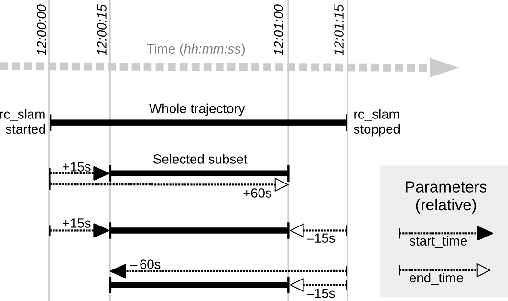

SLAM
The SLAM component is part of the sensor dynamics component. It provides additional accuracy for the pose estimate of the stereo INS. When the rc_visard moves through the world, the pose estimate slowly accumulates errors over time. The SLAM component can correct these pose errors by recognizing previously visited places.
The acronym SLAM stands for Simultaneous Localization and Mapping. The SLAM component creates a map consisting of the image features as used in the visual odometry component. The map is later used to correct accumulated pose errors. This is most apparent in applications where, e.g., a robot returns to a previously visited place after covering a large distance (this is called a loop closure). In this case, the robot can re-detect image features that are already stored in its map and can use this information to correct the drift in the pose estimate that accumulated since the last visit.
When closing a loop, not only the current pose, but also the past pose estimates (the trajectory of the rc_visard), are corrected. Continuous trajectory correction leads to a more accurate map. On the other hand, the accuracy of the full trajectory is important when it is used to build an integrated world model, e.g., by projecting the 3D point clouds obtained (see Computing depth images and point clouds) into a common coordinate frame. The full trajectory can be requested from the SLAM component for this purpose.
Note
The SLAM component is optionally available for the rc_visard and will run on board the sensor. If a SLAM license is stored on the rc_visard, then the SLAM component is shown as Available on the Web GUIs Overview page and in the License section of the System page.
Usage
The SLAM component can be activated at any time, either via the rc_dynamics interface (see the documentation of the respective Services) or from the Dynamics page of the Web GUI.
The pose estimate of the SLAM component will be initialized with the current estimate of the stereo INS - and thus the origin will be where the stereo INS was started.
Since the SLAM component builds on the motion estimates of the stereo INS component, the latter will automatically be started up if it is not yet running when SLAM is started.
When the SLAM component is running, the corrected pose estimates will be available via the datastreams pose, pose_rt, and dynamics of the rc_dynamics component.
The full trajectory is available through the service get_trajectory,
see Services
below for details.
To store the feature map on the rc_visard, the SLAM component provides the service
save_map, which can be used only during runtime (state RUNNING) or after stopping
(state HALTED).
A stored map can be loaded before startup using the service load_map,
which is only applicable in state IDLE (use the reset service to go back to IDLE
when SLAM is in state HALTED). Note that mistaken localization at (visually) similar places may happen more
easily when initially localizing in a loaded map than when localizing during continuous operation.
Choosing a starting point with a unique visual appearance avoids this problem.
The SLAM component will therefore assume that the rc_visard is started in the rough vincinity
(a few meters) of the origin of the map. The origin of the map is where the Stereo-INS
component was started when the map was recorded.
Memory limitations
In contrast to the other software components running on the rc_visard, the SLAM component needs to accumulate data over time, e.g., motion measurements and image features. Further, the optimization of the trajectory requires substantial amounts of memory, particularly when closing large loops. Therefore the memory requirements of the SLAM component increase over time.
Given the memory limitations of the hardware, the SLAM component needs to reduce its own memory footprint when running continuously. When the available memory runs low, the SLAM component will fix parts of the trajectory, i.e. no further optimization will be done on these parts. A minimum of 10 minutes of the trajectory will be kept unfixed at all times.
When the available memory runs low despite the above measures, two options are available. The first option is that the SLAM component automatically goes to the HALTED state, where it stops processing, but the trajectory (up to the stopping time) is still available. This is the default behavior.
The second option is to keep running until the memory is exhausted. In that
case, the SLAM component will be restarted. If the autorecovery parameter is set
to true, the SLAM component will recover its previous position and resume
mapping. Otherwise it will go to FATAL state, requiring to be restarted via
the rc_dynamics interface (see Services).
The operation time until the memory limit is reached is strongly dependent on the trajectory of the sensor.
Warning
Because of the memory limitations, it is not recommended to run SLAM at the same time as Stereo matching in full resolution, because the memory available to SLAM will be greatly reduced. In the worst case, a long running SLAM process may even be forcefully reset, when full-resolution stereo matching is turned on.
Parameters
The SLAM component is called rc_slam in the REST-API. The user can
change the SLAM parameters using the
REST-API interface.
Parameter overview
This component offers the following run-time parameters:
Status values
This component reports the following status values:
The reported state can take one of the following values.
Services
Note
Activation and deactivation of the SLAM component is done via the service interface of rc_dynamics (see Services).
Each service response (except for the reset service) contains a return_code,
which consists of a value plus an optional message.
A successful service returns with a return_code value of 0.
Negative return_code values indicate that the service failed.
Positive return_code values indicate that the service succeeded with additional information.
The SLAM component offers the following services.
reset
clears the internal state of the SLAM component. This service is to be used after stopping the SLAM component using the rc_dynamics interface (see the respective Services). The SLAM component maintains the estimate of the full trajectory even when stopped. This service clears this estimate and frees the respective memory. The returned status is RESETTING.
This service has no arguments.
The definition for the response with corresponding datatypes is:
{ "accepted": "bool", "current_state": "string" }
get_trajectory
returns the trajectory.
The definition for the request arguments with corresponding datatypes is:
{ "end_time": { "nsec": "int32", "sec": "int32" }, "end_time_relative": "bool", "start_time": { "nsec": "int32", "sec": "int32" }, "start_time_relative": "bool" }The service arguments allow to select a subsection of the trajectory by defining a
start_timeand anend_time. Both are optional, i.e., they could be left empty or filled with zero values, which results in the subsection to include the trajectory from the very beginning, or to the very end, respectively, or both. If not empty or zero, they can be defined either as absolute timestamps or to be relative to the trajectory (start_time_relativeandend_time_relativeflags). If defined to be relative, the values signs indicate to which point in time they relate to: Positive values define an offset to the start time of the trajectory; negative values are interpreted as an offset from the end time of the trajectory. The below diagram illustrates three examples for the relative parameterization.Fig. 52 Examples for combinations of relative start and end times for the
get_trajectoryservice. All combinations shown select the same subset of the trajectory.Note
A relative
start_timeof zero will select everything from the start of the trajectory, whereas a relativeend_timeof zero will select everything to the end of the trajectory. Absolute zero values effectively do the same, so one can set all values zero to get the full trajectory.The definition for the response with corresponding datatypes is:
{ "return_code": { "message": "string", "value": "int16" }, "trajectory": { "name": "string", "parent": "string", "poses": [ { "pose": { "orientation": { "w": "float64", "x": "float64", "y": "float64", "z": "float64" }, "position": { "x": "float64", "y": "float64", "z": "float64" } }, "timestamp": { "nsec": "int32", "sec": "int32" } } ], "producer": "string", "timestamp": { "nsec": "int32", "sec": "int32" } } }The field
producerindicates where the trajectory data comes from and is alwaysslam.The field
return_codeholds possible warnings or error codes and messages. The following table contains a list of possiblereturn_codevalues:
Code Description 0 Success -1 An invalid argument was provided (e.g., an invalid time range) 101 Trajectory is empty, because there is no data in the given time range 102 Trajectory is empty, because there is no data at all (e.g., when SLAM is IDLE)
{kind=link}
save_map
stores the current state as a map to persistent memory. The map consists of a set of fixed map frames. It does not contain the full trajectory that has been covered.
Note
Only abstract feature positions and descriptions are stored in the map. No actual footage of the cameras is stored with the map, nor is it possible to reconstruct images or image parts from the stored information.
Warning
The map is lost on software updates or rollbacks
This service has no arguments.
The definition for the response with corresponding datatypes is:
{ "return_code": { "message": "string", "value": "int16" } }
load_map
loads a previously saved map. This is only applicable when the SLAM component is IDLE. It is not possible to load a map into a running system. A loaded map can be cleared with the
resetservice call.This service has no arguments.
The definition for the response with corresponding datatypes is:
{ "return_code": { "message": "string", "value": "int16" } }